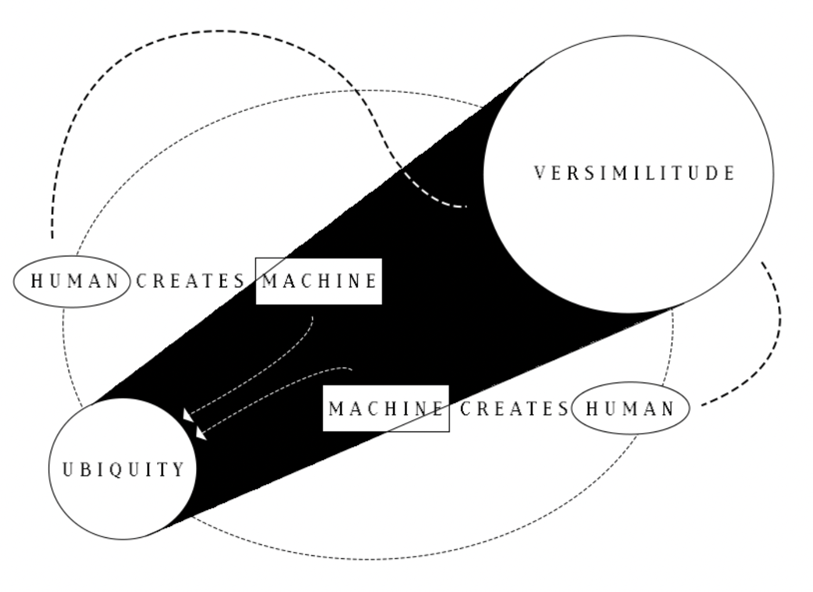

__ __ ______ __ __ ____ ____
/\ \/\ \ /\ _ \ /\ \/\ \ /\ _ `\ /\ _`\
\ \ \_\ \ \ \L\ \ \ `\\ \ \ \/\ \ \,\L \_\
+ -------------- \ \ _ \ \ __ \ \ , ` \ \ \ \ \ \ _\__ \ -------------- +
| \ \ \ \ \ \ \/\ \ \ \`\ \ \ \_\ \ /\ \L\ \ |
| \ \_\ \_\ \_\ \_\ \_\ \_\ \____/ \ `\____\ |
| \/_/\/_/ \/_/\/_/ \/_/\/_/ \/___/ \/_____/ |
| |
| |
| |
| "Technology is not neutral. We're inside of what we make, |
| and it's inside of us. We're living in a world of connections - |
| and it matters which ones get made and unmade." -Haraway |
| |
| |
| |
+____________________________________________________________________________ +
A key point I’d specifically like to call attention to is the comparability between the mechanics of control and shame. Both hold the key to agency, for users and innovators alike. Likewise, both hinge on the presence of visibility. If information is key to choice and subsequently control, we can begin to see the slippery slope that these elements lie upon. Untethered dissatisfaction here results in neurotic documentation of data, and hyperfocusing on specific points based on the focals points of those in power, who want to stay in power. This is an issue of power that is not new nor novel, and an unfortunate truth of this reality is that trying to change the wrong-doer is often futile. However, as Alexander Stein states, we can instead aim our focus on those who are not consciously falling prey to the systems in place, and those who are willing to implement smaller scale experimentation, research, and solutions. By acknowledging the presence of shame within our technologies, we can start to better understand why technologies that set out with good intentions, may turn sour, driving us further and further away from ourselves and initial goals. “Visibility, and the control it allows, defines all work sites, regardless of what is being manufactured or supplied. Vision is power, and infrastructure is built for and by a world that believes in this philosophy: its image is carefully controlled and constructed, and the capacity for watching and being watched becomes its own infrastructure” (LINK).
When we look at a door, the door knob is an indication that the door can be opened. Depending on the type of door knob, one can get a sense of how we might use it: e.g. push it down, pull it forward, twist it right, unlatch it horizontally, and so on. In interaction design terms, this is a common example of describing ‘affordances.’ Affordances are “characteristics or properties of an object that suggest how it can be used. It shows a user that an object can be interacted with.” It should be noted that an affordance is not merely a ‘property’ or attribute of an object. Instead an affordance is, “defined in the relation between the user and the object”(Affordances). In this sense, an affordance declares the various possibilities of action between the user and the object. A button is to be pressed, a lever is to be pulled, a keyboard is to be typed on. Pretty simple. User manuals are objects of the past as technologies increasingly aim for seamless ubiquity. As Apple puts it: “If you can point, you can use a macintosh” and further, “I think, therefore iMac.” But what’s happening as our machines are getting more complex and fluid? When interfaces turn into almost-blank screens that will respond to anything; when minimalism sleek is the standard; and when it’s to the point that our machines are just verisimilitude looking back at us. The affordances become unimaginably large, while also becoming increasingly familiar.
In the same way that our habit to collect data and share information stem from a desire for growth, so too do the tools, machines, functions, algorithms and physical products that we create. It is an integral thing to approach all our technologies we are using, or creating, with this at the forefront of our minds: “growth has become this unmarked category granted magical powers. As growth remains the common sense, [...] a cascade of unseen consequences, side effects, also become second nature.” It is no fault that we strive to improve ourselves and the environment around us through technological advancement– yet we must consider and acknowledge the real pitfalls and losses that come with gain. Mere tools such as cups, lenses, thread, etc. have very clear use cases, and thus very clear functions that might compensate for any dissatisfaction. What do our high-technologies reflect and reveal about us though? What inadequacies are we attempting to leave behind with innovation such as virtual reality, cyborgs, thinking computers, simulation technologies, etc.? What in turn might we lose from that gain, and what has untethered dissatisfaction resulted in for our technologies?
Technology is “a human enterprise devised, driven, and shaped not only by experimentation and innovation, but by our interests, hopes, fears, foibles, and fantasies”(Stein). While technology has come a long way in such a short amount of time, again and again we are reminded not of the feat, but instead of its shortcomings while also being dazzled by its potential. What discreetly stunts that potential productivity however is indefinite inadequacy, leading to untethered dissatisfaction. Author () states, “...choices [of the creator] tend to become strongly fixed in material equipment, economic investment, and social habits. [...] For that reason the same careful attention one would give to the rules, roles, and relationships of politics must also be given to such things as [...] the tailoring of seemingly insignificant features on new machines.” Thus, as we ourselves cope with dissatisfaction, so too do our technologies. The issue I identify in this section is the exertion of control leading to mega-hi-technologies: It can be argued that when we cannot control ourselves, the people around us or the environment around us, we attempt to make something we can control.
The more and more we might hate ourselves, the people around us, and the world around us, the more we continue to create technologies to ‘handle’ it. In the same way we increasingly engineer our perspectives with systems and algorithms, we also continue to engineer our realities as well. What this seems to have manifested into is the habit of looking towards the machine for reprieve from our dissatisfaction. It’s exactly here where a large danger is the blurred boundaries and lines between human and machine. Cyborg human, Humanistic AI. When we begin to have issues differentiating the two, not only are we using a faulty outlet for our grappling with the human condition, but to micromanage technology is to micromanage ourselves, and vice versa. This has spurred affordances becoming increasingly more and more highly-designed and ubiquitous, rather than malleable by the average man (STMS reading about car part manipulation) → desire for increased control. There’s nothing more ubiquitous than fraudulent, verisimilitude simulations of reality.
Cyborgs and Human-Like Machines ———————————————————————————————
“Who would have imagined that the computer's earliest achievements would be in the domain of logical analysis [...] That it could fly a plane and guide a missile before it could ride a bike? That it could create plausible preludes in the style of Bach before it could make plausible small talk? That it could translate before it could paraphrase? That it could spin half-discernible essays on postmodern theory before it could be shown a chair and say, as most toddlers can, "chair"?” (Brian Christan, winner of the Turing Test’s Most Human Human Award) Within the past two years, everywhere you look within the media, AI is seen as a groundbreaking and unprecedented innovation. AI is currently being used to solve problems in seemingly every aspect of modern life, its main selling point seems to be its ‘humanness’. While AI is viewed as a highly competent human-like technology that (supposedly) can solve many of man’s modern-day problems, I find these discrepancies in its abilities, pointed out by Brian Christain above, both fascinating and uncanny.
Following Christian’s train of thought, AI has seemingly found a shortcut to begin being able to match the competence of a PhD level psychologist, to be a emotionally mature companion, to be a moderator conscientious of human values, to do sentiment analysis for large-scale organization initiatives, to be an emotional support friend, and so much more. AI apparently does this all without learning first-hand what it means to recognize the smile of a parent, know what it is to share snacks with a friend, learn to listen to a close friends and family in distress, learn to recognize when someone might need help, learn first hand the theory of mind, and to ultimately grapple with concepts of solipsism: lessons of perception and care that are learned early on through the direct experience of human development.
One could argue that humans have become more inclined to interact with anthropomorphized technology as “Anthropomorphism is more positively related to adoption when one’s need for human interaction is high. Anthropomorphic chatbots may be more readily adopted because they mimic human service agents and are thus perceived as easier to use.” Furthermore, comparing human-to-human interaction and human-to-robot interaction, it can be argued that some have come to find comfort in automated interaction as opposed to human interaction. Recent research has found that some held preference towards automated services over human services in embarrassing scenarios. Individuals may feel more comfortable using automated systems to purchase or talk about sensitive personal information, they may feel more compelled to ask a chatbot questions that otherwise may be viewed as ignorant or awkward. In this sense, the feeling of shame may be averted due to these emerging technologies, as a user is talking to a chatbot rather than an actual person.
Amidst a ‘loneliness epidemic’ within the US, we can directly see this modern habit developing. In hopes of alleviating social isolation, virtual companion solutions are becoming more and more prevalent. Investment predictions show that the global adoptions of companion AI applications will likely reach a popularity level similar to social media and online gaming. Within the relationship between ourselves and the humanoid robots we continue to create, the theme of dissatisfaction and shame is continuously strung throughout. We should never “substitute a computer system for a human function that involves interpersonal respect, understanding and love”, he wrote in "Computer Power and Human Reason" - Joseph Weizenhaum. Weizenbaum, director of the Eliza project, is one of science's most outspoken opponents of AI research after discontinuing the Eliza project (Man v.s. Machine). "For Weizenbaum, we cannot humanise AI because AI is irreducibly non-human. What you can do, however, is not make computers do (or mean) too much" (Source).
It is in many ways that our technologies allow us to cope with the shame of everyday life. Whilst this has positive benefits, such as allowing people to get help and social support that otherwise may not be available to them. However, our technologies should not condition users to come to expect unilateral and ultimate customization of reality and social interaction to our every whim. As Esther Perel contemplates, “What worries me is how digitally facilitated connections are lowering our expectations and competence in the intimacy between humans”(“AICSJ S09 - Ripple Effects” 48). Social bots continue to become more human-like as time progresses; however, when humans are aware they are talking to sophisticated robots there often an intrinsic knowing of difference in being. In the case of robots and machines, “you don't converse with Google, or with most computer systems; you depose them.” With this dissonance in mind, it makes sense that any shame one might feel in a human-to-human social interaction dissipates when one of the humans is replaced by a machine: “We simply do not feel ashamed if, for instance, we are criticized or laughed at on account of our behavior by others whom we do not respect.”
One might argue that it’s a bit far fetched to assume humans would be so silly as to confuse fully sentient humans to humanoid servants–completely fair. (Example refuting that, or how high speed technology has created impatient people). It’s less concern over whether or not humans will outwardly confuse humans for machines, but instead concern for a mentality such as this to become increasingly pervasive and normal. (Draw upon neuroticism and such to conclude) (Behavioural nudging)
Self-surveillance and technologies of human altercation ——————————————————————
Our own being-ness is not isolated from the developments of the technologies stated above. Not only does human-like technologies change the landscape of our realities, but it also changes things within us. So our technologies are manifesting into humanistic superiorly skilled creatures for whom we command. As automation becomes more commonplace and sophisticated, an argument is being made that this will free us from menial jobs and labor. As our collective work environments stand, is this likely going to be true? It seems as our technologies increase, human counterparts are being expected to keep up. As our technologies upgrade, so does the relative definition of what ‘efficiency’ is.
Take for example excerpts from the 1917 published book “Applied motion study: a collection of papers on the efficient method to industrial preparedness.” The authors state, “There is no waste of any kind in the world that equals the waste from needless, ill-directed, and ineffective motions, and their resulting unnecessary fatigue. Because this is true, there is no industrial opportunity that offers a richer return than the elimination of needless motions, and the transformation of ill-directed and ineffective motions into efficient activity.” In remedy of inefficient workers, it is suggested, “The men themselves become more efficient. They become specialists, skilled workers. They learn the motion-study method of attack, and are thus more fit to undertake any type of work. They learn to think in elementary motions, and to eliminate waste in every activity of their lives.” The application of motion studies may look something like motion pictures. It seems that dissatisfaction of efficiency and productivity not only manifests in the creation of technological aids, but it also manifests in the training and modification of human behavior. While the authors of Applied Motion idealize that applied motion studies and execution will result in, “a greater number of promotions, more cooperation, more reading and study of the science of management, and higher wages earned with greater ease” – I argue the consequences of applying any type of standardization to humans often negate any perceived gain.
Kat Holmes, designer and technologist focused on disability technology states: “There is a natural inclination to use yourself as a shortcut to make assumptions about the people that you’re designing for”(Holmes). There seems to be an imposed shame on disabled individuals, communicated through our very technologies. These technologies state through their function that one is or is not abnormal, and either does or does not require a device that will help them fit the status quo.
What might seem second nature, to replace an arm if an arm is missing, has undertones of accusation: “The emphasis on restoring the visual features of a body so that the loss and difference, the before and after, might be undetectable, can preclude the alternate possibilities that individual experience and proclivities might suggest”(12). (Bridge) “These hybrid networks are the cyborgs, and they don't just surround us - they incorporate us.” (5) → “Technology is not neutral. We're inside of what we make, and it's inside of us. We're living in a world of connections - and it matters which ones get made and unmade." (Cyborg manifesto 11). Thus, not only do these technologies have social and cultural implications, but they also hold real control.“The insurance company could pull my data and decide whether I have used my leg enough to justify the next one.” By getting a device to help you live, you are sacrificing an extreme level of privacy.
The recurring theme here is utilizing seemingly helpful technologies to spread belief about what it means to be human on every level. These ideas and this information isn’t just for those who are considered disabled. When perfection is the goal, everyone has something to work towards: “Networks are also inside us. Our bodies, fed on the products of agribusiness, kept healthy - or damaged - by pharmaceuticals, and altered by medical procedures, aren't as natural as The Body Shop would like us to believe” (5). This mentality of technology not only targets those who are considered disabled, but all individuals. In the words of (), “The cyborg age is here and now, everywhere there's a car or a phone or a VCR. Being a cyborg isn't about how many bits of silicon you have under your skin or how many prosthetics your body contains. It's about Donna Haraway going to the gym, looking at a shelf of carbo-loaded bodybuilding foods, checking out the Nautilus machines, and realizing that she's in a place that wouldn't exist without the idea of the body as a high-performance machine. It's about athletic shoes.” (4) The use of technology when maintaining one’s body. What constitutes technology? Not just the wires and metal, but the product of those machines as well.” “Winning the Olympics in the cyborg era isn't just about running fast. It's about "the interaction of medicine, diet, training practices, clothing and equipment manufacture, visualization and timekeeping"(5). (biohacking and more cyborg tendencies?>)
Our replicas are funny looking —————————————————————————————————
When we increasingly begin to see ourselves within our technologies, what does that say about our perception of ourselves? “it is quite a primal thing to [...] project human qualities onto objects, especially the ones that specifically sort of invite that interpretation through various means– either that they are anthropomorphic in nature physically or that they act in anthropomorphic ways– as in like something seeming chaotic or unexpected or you know, sentient.” How may seeing animal/humanistic mannerism and behavior within our technology impact the way in which we interact with those machines, and how in turn may that affect us? If the choices of our creators increasingly look like the creators themselves, or aim to alter, modify, and upgrade humanity — what does that look like in our technology, and how does that change technology’s users and subsequently our environment?” It is here where things get murky: Our tools and creations of understanding turn to replicas of control as innovators and the money behind innovation hyperfocus on inner dissatisfaction and the assumption that their users desire exactly what they desire.
There is a very cyclical nature to this whole dance with our replicas: As author Holmes puts it, “A body –any body– will take its cues, bend the available resources, and invent its being with the matter around it”(15). And likewise, any mind, perspective, emotion and manner of interacting with those around us become an increasingly larger aspect of our technologies of tomorrow? It seems the very action of applying standardization of humans for the sake of efficiency undos humanness itself. It is one thing to make a replica out of love, it is another thing to make a replica out of ego. What is seemingly inconsequential, as individuals will, at the end of the day, stay themselves – it is important to note that with pervasive technologies that do not put human life and well-being at the genuine forefront of its mission, “A body –any body– will take its cues, bend the available resources, and invent its being with the matter around it”(15). And likewise, any mind, perspective, emotion and manner of interacting with those around us, will become an increasingly larger aspect of our technologies of tomorrow. As our technologies move closer and closer to becoming replicas, it seems the further we stray from ourselves. Not only this, but hi-technologies often undermine and overlook already existing technologies or cycles that work (just to come back to them later on often). Or tramples them, for perceived value of time-saving efficiency. Awareness is the backbone of user agency and a balanced consumer-company relationship in the neoliberal age.
We love things that we can control: Simultaneously ‘worshiping’ and humanizing it, while also treating it poorly. (What makes people hold onto control so tightly? Survival?)Technology is not just simulated and automated excellence. → “We have been so desensitized by a hundred and fifty years of ceaselessly expanding technical prowess that we think nothing less complex and showy than a computer or a jet bomber deserves to be called "technology " at all. As if linen were the same thing as flax — as if paper, ink, wheels, knives, clocks, chairs, aspirin pills, were natural objects, born with us like our teeth and fingers – as if steel saucepans with copper bottoms and fleece vests spun from recycled glass grew on trees, and we just picked them when they were ripe…”(UKL). If we go so far to say that technologies can be sentient humans too, perhaps they require a balancing agent of agency and control as well. With that in mind, things such as the technology of nature can be regarded as hi-technologies that deserve research and funding. These technologies are entities to work with, observe and understand, before harnessing its power and potential– not puppets on a mass-produced, single-use string. In turn, the trajectories of our technology become increasingly controlling, exploitative, neurotic and insidious as both creator and users cope with a never-ending cycle of shame and dissatisfaction, projecting them onto our high technologies, before having those technologies insight never ending modifications of ourselves.


